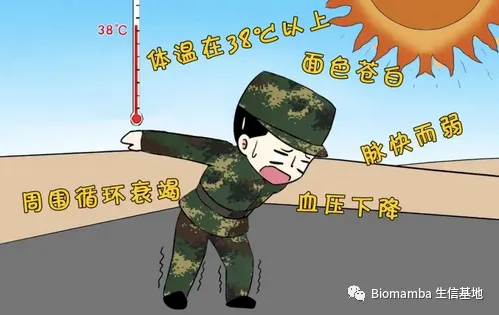
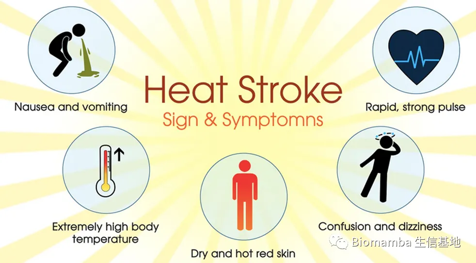

频上热搜的热射病，是个啥？
原文：https://mp.weixin.qq.com/s?__biz=MzAwMzIzOTk5OQ==&mid=2247489667&idx=1&sn=6e06a02973e39df84ec115a183a57ca9&chksm=9b3f61d3ac48e8c5cdfb7016b44bca361dce7e0bda5c3af47fe7716175eab255872ab4b13234#rd 合集：文献速递 / 漫谈胡侃
随着全球气候的逐年变暖，极端天气在全球多个地区发生的频率逐年增加，中暑的发生率也越来越高。热射病（ Heat Stroke,HS）为致命性中暑, 主要临床表现为高体核温度 (40℃~47℃) 、皮肤干热及中枢神经系统异常, 如注意力不集中、记忆减退、谵妄、惊厥、昏迷等, 重症患者可出现多器官功能障碍综合征 (MODS)，死亡率极高。根据劳力性因素的有无, 热射病可分为经典型热射病 (classic heat stroke, CHS) 和劳力型热射病 (exertional heat stroke, EHS) 。CHS是由于高温环境下体温调节功能障碍导致散热减少, 主要发生于老人、小孩和有基础疾病的人群;而EHS主要发生在高温、高湿的环境中进行高强度体能作业的部队官兵、青壮年人以及运动员等。 
发病机制
对热射病的研究主要集中在热刺激下机体失代偿的病理变化如引起肠屏障缺陷导致内毒素入血引起全身炎症，引起中枢神经系统障碍、凝血功能障碍和肝、肾、心血管肌肉等多器官功能障碍。 ● 1.炎症反应机制● 热应激状态下, 由于高热损害、缺血再灌注及炎症细胞募集效应, 胃肠的通透性增加, 使胃肠道菌群的脂多糖（LPS）进入体循环，从而导致了内毒素血症的发生，内毒素入血激活单核细胞，产生白细胞介素-1(interleukin-1,IL-1）、肿瘤坏死因子-α(tumor necrosis factor-α,TNF-α）等，TNF-α、IL-1属于促炎细胞因子，TNF-α、IL-1在抗炎因子（IL-6、IL-10等）的产生过程中起诱导作用，然而IL-6又参与巨噬细胞以及单核细胞产生炎性因子的过程。细胞因子间的相互作用下，使细胞因子形成了一个庞大的网络体系，当超出机体的代偿能力时，会引起全身组织和细胞的损伤，从而形成全身炎症反应综合征（Systemic Inflammatory Response Sundrome,SIRS)。近年来有些临床和实验数据表明热射病的死亡率高，可能是热细胞毒性、凝血功能紊乱、SIRS的联合作用所致内毒素透过黏膜进入门脉循环，最终引起全身性炎症反应、弥散性血管内凝血（disseminated intravascular coagulation，DIC）、多器官功能衰竭 (multiple organ failure, MOF) 以及其他临床表现。 ● 2. 直接热损伤机制● 当实验动物核心温度高于43.8℃后, 测量血浆脂多糖的浓度无显著增高, 但实验动物仍发生了热射病。这个实验结果表明, 热射病可能的发生机制有两种:内毒素途径和高热直接损伤途径。而通过这种高热损伤途径引起热射病的原因, 可能是过高热使得热休克蛋白72 (HSP-72) 变性, 从而失去对机体细胞的保护作用, 造成胞内相关蛋白质变性, 引起特定细胞死亡。
热射病预警信号
现以下4种情况，极有可能是发生热射病的先兆 ：
● 烫，自觉身体发烫（从里向外发热）；● 晃，异常疲倦、行走不稳；● 晕，头晕、意识模糊、抽搐；● 乱，出现脸白、心慌、气短、恶心、呕吐、腹痛、腹泻等症状。

热射病的治疗原则与预后评价
"冷却第一、运输第二”是热射病的治疗原则。
** **
冷水浸泡 是全身冷却速率最快并降低发病率和病死率的降温方法。当体温在症状出现30 min内降至40℃时，病死率接近或实际上为零，且多数患者康复后无后遗症。美国运动医学学院建议：●(1) 出院后7 d内不要运动；●(2) 随访约1周，根据医师评估对可能受累器官进行体格检查和重复实验室检查或诊断性影像学检查；●(3) 在凉爽的环境中开始锻炼，并逐渐增加持续时间、强度和热暴露2周，以适应并表现出耐热性；●(4) 如果很难恢复活动，考虑在事件发生后约1个月进行实验室运动、热耐受性测试；**● (5) **2～4周训练后，如运动员有耐热性，可参加完整比赛。
参考文献
[1]刘树元,宋景春,毛汉丁,赵金宝.中国热射病诊断与治疗专家共识[J].解放军医学杂志,2019,44(03):181-196.
[2]王玲,金红旭,郭俊峰,葛凤,孙香蕾,吴广昊,王蓓蓓,高燕.热射病临床研究进展[J].创伤与急危重病医学,2022,10(02):81-82.
[3]岳栋,倪军,张静.热射病肝脏组织损伤的发生机制及研究进展[J].中华灾害救援医学,2022,10(06):330-333.
[4]李代波,周欢,刘乐斌.热射病的发病机制及防治研究进展[J].解放军预防医学杂志,2017,35(12):1598-1601.
[5]吴士文,陈阿楠,卜甜甜,于生元.热射病发病机制的研究进展[J].中国康复理论与实践,2010,16(03):236-238.

如何联系我们
公众号后台中消息更新不及时，超过48h后便不允许回复读者消息，这里给大家留一下领取资料、咨询服务器的微信号 ，方便大家随时交流、提建议（由助理接待）。大家可以阅读完这几篇之后添加笑一笑也就算了如何搜索公众号过往发布内容